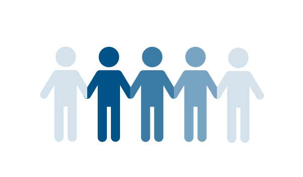

화재, 토네이도, 홍수, 허리케인, 지진, 방화, 총기 테러는 모두 종교 시설에 영향을 미칠 수 있습니다. 사건이 거의 또는 전혀 경고 없이 발생함에 따라 많은 종교 시설에서는 교인, 직원, 시설의 안전과 보안을 보장하기 위한 계획과 절차를 개발하고 업데이트하고 있습니다.
훈련 및 계획 연습은 자발적, 신앙 기반, 지역사회 파트너 조직, 직원 및 자원봉사자의 재난 대비, 대응 및 복구 능력과 역량을 강화할 수 있습니다.
이 페이지의 자료는 종교 기반 및 커뮤니티 기반 조직에 도움이 될 수 있습니다.
웨비나, 지역 사례 및 피드백을 제공할 수 있는 기회를 통해 최신 정보를 받아보세요.
Graphic
사무실 정보
DHS 산하 신앙 기반 및 이웃 파트너십 센터는 지역사회 전체에 걸쳐 연결고리를 구축하고, 재난 주기의 모든 단계에서 조정 문제를 극복하고 광범위한 종교 기반 단체(FBO)의 참여를 돕기 위해 노력합니다.
신앙 기반 및 자원 봉사 관련 리소스 찾기
Graphic

자원봉사 단체 연락처
FEMA 자원봉사 단체 연락책(VAL)은 지역사회 재난 관리를 돕는 정부, 자원봉사, 종교 및 지역사회 기반, 민간 부문, 자선단체 및 전체 지역사회 파트너 간의 관계를 구축합니다.
참여 방법 알아보기
전체 목록을 찾아보거나 아래 필터를 사용하여 특정 주제에 대한 정보를 찾아보세요.